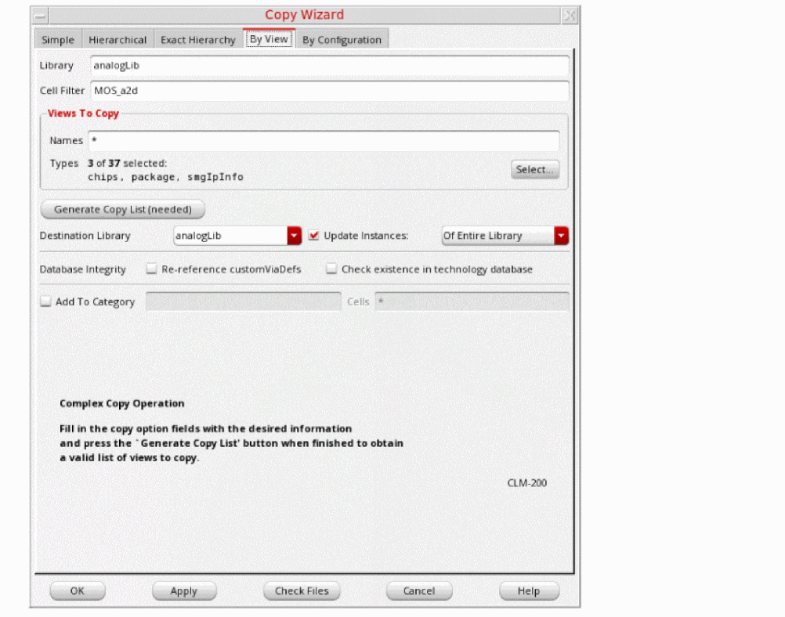

Copying Specific View Using the Copy Wizard
To copy only specific views to a different library, follow these steps:
- Select a library.
-
Choose Edit – Copy Wizard.
The Copy Wizard appears. -
Select the By View tab.
- The selected library name appears in the Library field.
- If you selected a cell, the cell name appears in the Cell Filter field.
- An asterisk appears in the Names field in Views To Copy.
You can change any or all of these values. -
In the Cell Filter field, type the name of the cell you want to copy.
You can type a specific cell name or a character string to filter patterns in cell names, such ascc*or*a2d. -
In the Views To Copy – Names field, specify the names of the views you want to copy. You can type a specific view name or a character string to filter patterns in view names, such as
s*.
Alternatively, or optionally, use the Select button to select specific view types. -
Click Generate Copy List.
The cellviews that match the cell and view filter strings appear in the copy list. Cell files are not affected by the Views To Copy filter, so all cell files are included in the copy list. By default, all items are selected for copying. In the Destination Library field, type or select a new destination library name to copy the selected cellviews to a different library. - Select the Update Instances check box and select one the required option from the drop-down list.
- Select the options in the Database Integrity field if you want to update technology data in the copied library after the copy command is completed.
- Click OK.
Library Manager copies the cells in the copy list to the destination library. If the destination library is the same as the top library, Library Manager copies the cells or views to the new names you specified.
If the destination library does not already exist, the New Library form appears, where you can specify a location and design management option for the new library.
Related Topics
Adding a Copied Cell to a Category
Selecting Items for Copying in the Copy Wizard
Return to top